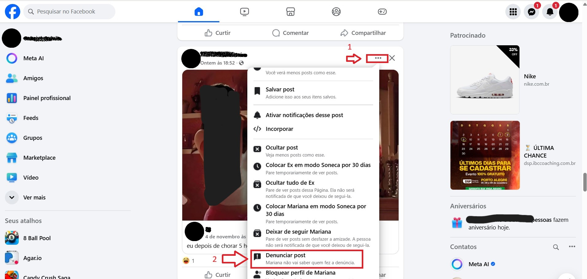
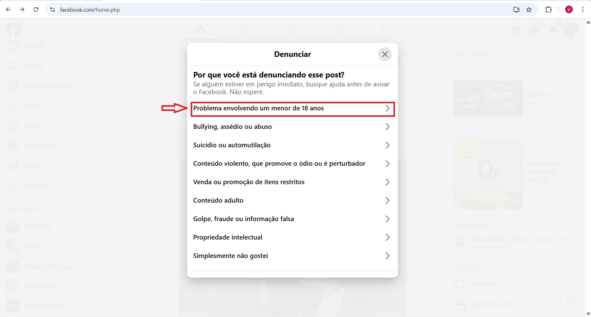
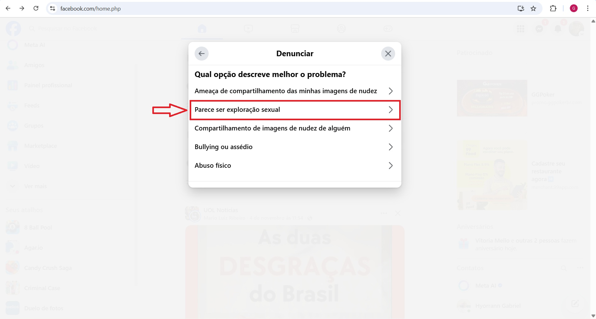
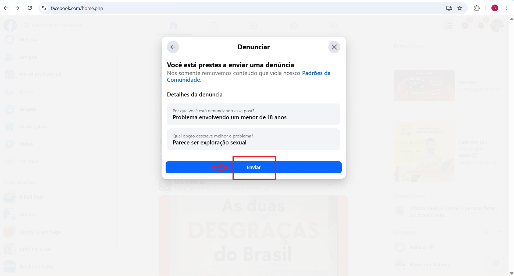
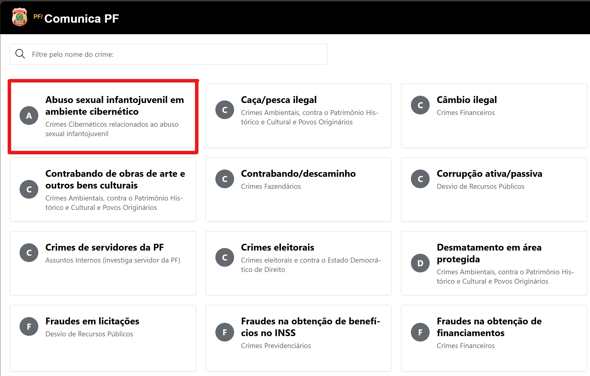

⚠️ A pornografia infantil é um crime gravíssimo, previsto tanto no Código Penal Brasileiro quanto no Estatuto da Criança e do Adolescente (ECA – Lei nº 8.069/1990), especialmente em seu artigo 241-A, que proíbe oferecer, divulgar, compartilhar, produzir ou publicar qualquer conteúdo pornográfico envolvendo menores de 18 anos.
Nas redes sociais como o Facebook, por exemplo, predadores digitais utilizam perfis falsos e estratégias de aproximação para conquistar a confiança de crianças e adolescentes, com o intuito de manipular, explorar ou aliciar. Muitas vezes, esses conteúdos e interações passam despercebidos pelos sistemas de moderação das plataformas, o que
reforça a importância da denúncia e da vigilância constante.
Essas abordagens costumam começar com mensagens aparentemente inofensivas, mas escondem intenções abusivas. Além disso, é comum o uso de emojis com duplo sentido ou conotação sexual, que funcionam como códigos entre pedófilos para se reconhecerem nas redes:
🍭 (Doce) – alusão à infância ou à ingenuidade.
👧 (Menina) – representação explícita de uma criança.
💦 (Gotículas) – insinuação sexual.
🔞 (Proibido para menores de 18 anos) – referência a conteúdo adulto.
🍼 (Mamadeira) – símbolo usado para indicar preferência sexual por crianças.
🚨 Sempre que observar interações desse tipo em perfis, grupos ou comentários, denuncie imediatamente.
Passos de Denúncia no Facebook (Computador)
🔍 1. Como identificar conteúdo suspeito
• Perfis com fotos de crianças, mas com descrições, hashtags ou comentários inadequados.
• Contas que seguem apenas perfis de menores de idade.
• Postagens com emojis e frases de conotação sexual.
• Mensagens privadas com pedidos de fotos, vídeos ou dados pessoais.
• Grupos com nomes ou descrições ambíguas que compartilham conteúdo sexualizado.
• Hashtags suspeitas, como #kidsmodel, #childbeauty, #preteenmodel, entre outras.
💡 Dica
Antes de denunciar, tire prints das postagens e conversas. (censure o conteúdo sensível nas prints e entregue somente para as autoridades)
Isso servirá como prova para registrar um Boletim de Ocorrência (B.O.).
🚨 2. Como denunciar conteúdo no Facebook
💻 Versão Web (Computador)

Passo 1:
Acesse o post, perfil ou página suspeita.
Passo 2:
Clique nos três pontinhos ⋯ no canto superior direito. → Selecione "Denunciar post".

Passo 3:
Clique em “Problema envolvendo um menor de 18 anos”.

Passo 4:
Escolha “Parece ser exploração exploração sexual” .

Passo 5:
Revise e finalize enviando a denúncia.

🧾 4. Como registrar o Boletim de Ocorrência online:
Após denunciar na plataforma, é importante formalizar o caso junto às autoridades para combater com maior eficácia esse tipo de conteúdo criminoso.
Onde registrar o Boletim de Ocorrência:
Se você sabe que o autor do crime está no seu estado, registre o Boletim de Ocorrência no site da Polícia Civil do seu estado.
Se o crime ocorreu fora do seu estado ou você não sabe de onde partiu o conteúdo, registre na Polícia Federal, que
atua em investigações de crimes virtuais interestaduais e internacionais.
🖥️ Como registrar. Passo 1:
Acesse o site da Polícia Civil do seu estado ou da Polícia Federal. Abaixo está listado os sites da Polícia Civil de cada estado brasileiro que possuí a função de Boletim de Ocorrência (B.O.) online.
A Polícia Federal possui em seu site uma categoria exclusiva para esse tipo de ocorrência.
Site da Polícia Federal:
https://apps.pf.gov.br/r/comunicapf/comunicapf/pagina-inicial

Lista de delegacias da Polícia Civil e seus respectivos estados:
Passo 2:
Clique em “Registrar Boletim de Ocorrência Online”.
.
Passo 3:
Escolha a opção “Crimes contra crianças e adolescentes” ou “Crimes virtuais” em caso de ausência de ambas categorias, selecione "outros".
Passo 4:
Preencha o boletim com informações completas e objetivas sobre o ocorrido.
Detalhe o máximo possível, incluindo:
• Uma descrição detalhada do que aconteceu, informando se o conteúdo foi postado, compartilhado ou enviado a alguém.
• Links das publicações, perfis ou páginas suspeitas.
• Datas e horários aproximados das postagens ou conversas.
• Prints (capturas de tela) como anexos, sempre com o conteúdo sensível ou explícito censurado — por exemplo, borrando ou cobrindo partes inapropriadas antes de enviar.
Exemplo de redação para o B.O. on-line:
“No dia 05/11/2025, às 21h30, encontrei uma publicação no Facebook contendo material sexual envolvendo menores de idade.
O perfil responsável utiliza o nome "Exemplo da silva" e permanece ativo até o momento, possui links para o Telegram suspeitos.
Registrei prints (com as imagens sensíveis censuradas) e anotei o link direto da postagem:
'https://www.Facebook.com/p/xxxxxxxxx/'.
Caso de Emergência.
⚠️ Em caso de emergência ou risco imediato, procure a Delegacia de Proteção à Criança e ao Adolescente (DPCA) da sua cidade ou ligue 190.
 Guia de Denúncia no Facebook
Guia de Denúncia no Facebook